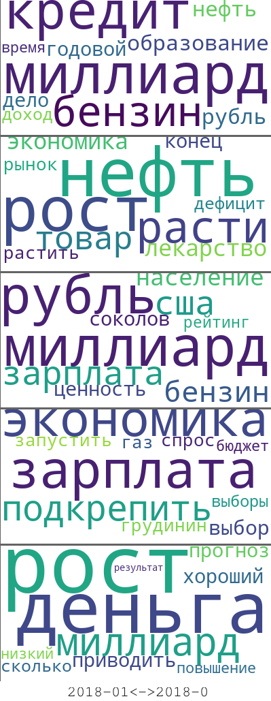

Big Data Indicators: ежемесячные отчеты о динамике индикаторов
Инфляционные ожидания населения
Март 2018 г.
Интенсивность инфляционных ожиданий
В марте 2018 г. обеспокоенность населения краткосрочной динамикой инфляции немного возросла относительно предшествующего месяца. Инфляционные ожидания интернет-пользователей остаются повышенными относительно середины 2017 г. Это соответствует общим ожиданиям повышения инфляции во втором полугодии 2018 г. со стороны Банка России и профессионального аналитического сообщества.
Ожидания интернет-аудитории относительно роста цен в ближайший год с середины 2017 г. остаются выше ожиданий, измеренных по общей выборке домохозяйств в регионах. В марте 2018 г. индикатор медианных ожиданий роста цен, рассчитываемых ФОМ для Банка России на основе опросов населения остался примерно на уровне февраля.

Note:
(1) Для удобства сопоставления индикаторы нормализованы: N(0, 1);
(2) Прочитать подробную информацию о big data индикаторе интенсивности инфляционных ожиданий и исследовать интерактивный график его динамики можно здесь.
Подневной индикатор интенсивности инфляционных ожиданий показал наиболее заметный рост в конце месяца, а именно, с 26 марта - момента вступления в силу нового решения ЦБ РФ о снижении ключевой ставки ЦБ РФ. Это уже второй последовательный эпизод коррекции инфляционных ожиданий вверх на фоне смягчения условий денежно-кредитной политики. Причем, если в феврале 2018 г. эта коррекция была незначительной, в марте 2018 г. она оказалась существенной, став одной из основных причин повышения индикатора по итогам всего месяца. В течение марта 2018 г. наблюдалось незначительное ослабление курса рубля, что также могло способствовать небольшому повышению инфляционных ожиданий.
Note: Для удобства сопоставления индикаторы нормализованы: N(0, 1).
Факторы изменения интенсивности инфляционных ожиданий
Анализ факторов изменения интенсивности инфляционных ожиданий подтверждают гипотезу о том, что денежно-кредитная политика оказала значимое влияние на рост инфляционных ожиданий населения в марте 2018 г. При этом другим важным фактором роста ожиданий стало повышение обеспокоенности населения неопределенностью экономической ситуации. Рост вклада этого фактора в общий рост ожиданий был также зафиксирован в последнюю декаду мая.

Note: Прочитать подробную информацию об анализе факторов изменения big data индикатора интенсивности инфляционных ожиданий и исследовать интерактивный график их динамики можно здесь.
Более детальный анализ содержания комментариев марта 2018 г. - с акцентом на выявление специфических факторов их изменений (выделение сущностей в текстовых сообщениях) - показывает, что важными факторами повышенного уровня инфляционных ожиданий остаются цены на бензин и опасения относительно повышения различных тарифов и платежей. Эти факторы часто обсуждаются интернет-пользователями при упоминании об ожиданиях роста цен.
Note: приведенные категории упоминаются примерно в 40% всех комментариев за февраль 2018 г.
Результаты тематического моделирования
Вместе с тем, результаты тематического моделирования свидетельствуют о том, что, помимо обеспокоенности ростом цен на топливо, в течение всего 1 кв. 2018 г. население продолжало проявлять значимую обеспокоенность состоянием собственных доходов, продолжая связывать их снижение с обеспокоенностью ростом цен.
Отдельные важные темы комментариев, упоминающих ожидания роста цен, за 1 кв. 2018 г.

Note: Общие результаты тематического моделирования - за каждый квартал с начала 2017 г. - доступны в разделе “Индикаторы”.
Неопределенность инфляционных ожиданий
В соответствии с данными big data indicators в марте 2018 г. было зафиксировано небольшое повышение неопределенности инфляционных ожиданий. Это согласуется с небольшим повышением вклада фактора неопределенности экономической ситуации в динамику индикатора интенсивности инфляционных ожиданий. При этом аналогичный показатель, рассчитываемым ФОМ на основе опрососов населения, зафиксировал значительный рост неопределенности инфляционных ожиданий в марте 2018 г. - до уровней середины 2015 г.

Note: Прочитать подробную информацию об индикаторе неопределенности инфляционных ожиданий и исследовать интерактивный график его динамики можно здесь.
Примеры комментариев: март 2018 г.
## Господа я сейчас плохую вещь скажу. Рост цен говорит о росте экономики так или иначе они будут расти на все товары. По этому не надо думать что цены на бензин будут падать. Они будут только расти. Смиритесь с этим.
## А цены на нефть резко подняли, спасая рубль, который стал выгодным средством спекуляции. Только за счёт спекулятивных сделок и держится. К экономике это имеет весьма условное отношение.
## С Киришского НПЗ ("СургутНефтеГаз") идёт качественное топливо(так как много идёт и на экспорт), а если говорить о качестве нефтепродуктов Роснефти на Дальнем Востоке (к примеру на Сахалине), то они не соответствуют европейским стандартам. Это легко ощутить хоть в Хабаровске, хоть в Комсомольске-на-Амуре, Южно-Сахалинске. И цены здесь намного выше, чем на Северо-Западе России.
## Государство забирает себе 70% от цены топлива, и постоянно поднимает эту долю, но сдерживает цены в рознице при том, что цены на всё, что нужно для производства постоянно растут. Долго это продолжаться не будет. Скорее всего после выборов взлетят цены на бензин, а нам из зомбоящиков будут рассказывать, что в Европе тоже такие цены, забывая при этом про европейские зарплаты.
## А на бензин будет ещё выше цена-я вам обещаю !
## Прям не знаю куда бы деть свои миллионы, слава богу хоть на топливо цена вырастет...
## рост цен говорит о запуске инфляции, в свою очередь удешевлении рубля, снижении доходов населения в качественном виде, вместе с тем, что сейчас уже и происходит, увеличение количества кредитов в банках, повышение закредитованности населения, ввиду всего перечисленного - бедность...
## в 17 г рост цен составил 7-8%, в 18 г прогнозируют тот же рост. Это оптимистично конечно. На несколько рублей вырастит цена это факт.
## Так выборы уже в прошлом. \nМожно ВСЕ повышать. Вплоть до цен на самые необходимые продукты питания, электроэнергию, газ, проезд на общественном транспорте, услуги связи, отопление, водоотведения, сборы, штрафы за неправильный переход дорог.
## <...> Зато совершенно точно вырастут налоги и поднимутся цены . <...>
## ценын растут не от роста экономики а из за дефецита гос бюджета,сама банковская система предпологает такое поведение иначе она сдохнет. Деньги делают дерьги а чтоб вы не разбогатели есть сдерживающий фактор инфляция
## Ну а почему бы нет, цены на всё растут расходы тоже увеличивается. По-моему всё нормально надо поднимать экономикуИндикатор кризисных настроений населения
Март 2018 г.
Интенсивность кризисных настроений
Обеспокоенность населения кризисными процессами в экономике в марте значимо возросла – примерно до уровня середины 2016 г., в 2 раза превысив значение марта предшествующего года.

Note:
(1) Для удобства сопоставления индикаторы нормализованы: N(0, 1);
(2) Прочитать подробную информацию о big data индикаторе кризисных настроений и исследовать интерактивный график его динамики можно здесь.
Повышение подневного индикатора кризисных настроений происходило на фоне небольшого ослабдления рубля в марте 2018 г.

Note: Для удобства сопоставления индикаторы нормализованы: N(0, 1).
Факторы изменения интенсивности кризисных настроений
В марте 2018 г. обеспокоенность возможностью экономического кризиса со стороны населения в большей степени была связана с состоянием мировой конъюнктуры (включая опасения введения новых санкций), а также со слабым повышением обеспокоенности населения инфляционными процессами в экономике.

Note: Прочитать подробную информацию об анализе факторов изменения big data индикатора кризисных настроений и исследовать интерактивный график их динамики можно здесь.
Примеры комментариев: март 2018 г.
## Может послужить толчком для мирового финансового кризиса.
## <...> привел страну к кризису
## как только она [цена на нефть] снизилась, и даже не достигла уровня 90-х, в стране сразу кризис и спад пости во всех сферах
## Это почему последние 5 лет экономический спад? Налоги низкие очень!
## Да, не посильным становиться сия ноша многим, налоги большие, материалы дорогие, бензин зашкаливает, да и альтернативы дачам в плане не дорогого отдыха хватает. А в общем, я вижу только общий экономический спад, семью бы прокормить <...>.
## не на много. и если учесть, что уже прошло почти 20 лет, то на мизер савсем. да и то это <...> заслуга высокой цены на нефть. как только она снизилась, и даже не достигла уровня 90-х, в стране сразу кризис и спад пости во всех сферах
## Пик нефтедобычи придётся на начало 20-х, а потом спад из-за истощения месторождений.
## Несмотря на продолжающийся пятый год спад реальных располагаемых доходов граждан, данные Росстата указывают на бурный рост трат и сокращение сбережений как в банках, так и наличных (см. график). Вот так. Спад реальных доходов, сокращение сбережений.